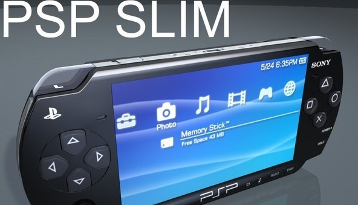
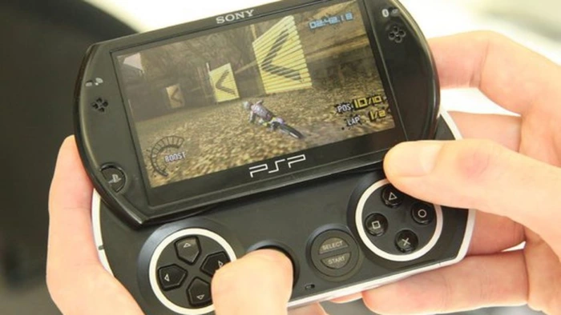

PSP-2000

PSP-3000

PSP-go
В «консольных войнах» Sony обгоняла Nintendo дважды. В пятом поколении Nintendo 64 уступила первой PlayStation, в шестом GameCube продалась хуже не только PS2, но и новичка Xbox. Nintendo сохранила первенство лишь на одном рынке — среди портативных консолей. Линейка Game Boy фактически обеспечила компании монополию.
Долго Sony в стороне не оставалась. Уже через три года после начала продаж PlayStation 2, в ходе Е3 2003, исполнительный директор SCE Кэн Кутараги анонсировал PSP — первую портативную консоль семейства PlayStation. Саму приставку публике тогда ещё не показали, зато огласили технические детали и представили UMD — формат дисков от Sony, который вмещал до 1,8 гигабайта памяти, а в диаметре был всего шесть сантиметров. В том же году в сети появился концепт консоли. Все кнопки на нём были плоские, а аналоговые стики отсутствовали.
В 2004 году, во время очередной выставки Е3, устройство наконец представили игрокам. Аналоговый стик всё же появился, кнопки «вытянулись» вверх, а сама PSP стала более привычной и угловатой — такой, в каком виде она в итоге и дошла до магазинов.
Тогда консоль впечатляла своими вычислительными способностями. До анонса самой мощной «портативкой» оставалась Game Boy Advance, однако PSP всё изменила: процессор оказался мощнее в двадцать раз (333 МГЦ против 16), видеочип — в двадцать один (96 килобайт против 2 мегабайт).
В отличие от Nintendo, Sony пошла своим путём: компания стремилась перенести игровой опыт с домашних стационарных консолей в портативный формат — не выпускать простенькие игры для портативки, а разрабатывать полноценные AAA-тайтлы, которые бы уместно смотрелись и на «большой» консоли.
В стартовую линейку игр входили 24 игры: среди них были Ridge Racer, Metal Gear Acid, Dynasty Warriors и Wipeout Pure. Как хвасталась Sony, это «в три раза больше, чем у ближайшего конкурента» — Nintendo DS, запуск которой происходил в то же время.
На выставках в 2004 году публика приходила в восторг от графики, которая почти дотягивала до уровня PS2 — и это на портативной консоли. Ни Game Boy, ни Nintendo DS такого не могли. PSP же предлагала крупнобюджетные проекты, что привлекало не только сторонников Nintendo, но и тех, кто предпочитал стационарные консоли.
PSP продвигали не только как игровую консоль, но и как полноценное мультимедийное устройство: она поддерживала видео формата MPEG-4, проигрывала музыку, а также позволяла выходить в интернет с помощью беспроводного Wi-Fi. В Японии и Америке на UMD начали выпускать фильмы. В США, например, в PSP первой партии вкладывали диск «Человека-паука 2» от Сэма Рэйми. Sony строила грандиозные планы: компания хотела наладить производство UMD таких же масштабов, что и у обычных DVD-дисков.
В Японии в первый день продаж скупили более 200 тысяч PSP. В Европе за первую неделю реализовали миллион приставок. В Северной Америке, несмотря на завышенную цену из-за проблем с налогообложением, продажи тоже оказались успешными — полмиллиона копий за первые два дня. Во многих регионах выпуск консоли откладывался из-за того, что на неё был слишком высокий спрос — Sony увеличивала тиражи.
Однако в итоге PlayStation Portable не смогла обогнать Nintendo DS — конкурент продался почти в два раза лучше. Но Sony сделала нечто более важное: вернула на рынок портативных приставок, где долгое время находилась лишь одна Nintendo, конкуренцию. Да и 80 миллионов проданных гаджетов — всё ещё отличный результат, учитывая, что компания не обладала опытом выпуска подобных консолей.
За свой жизненный цикл PSP перевыпускалась несколько раз, в основном с несущественными отличиями. Однако есть и такие модели, которые сильно отличаются от своих предшественниц.
Самая первая модель консоли — это PSP-1000 или, как её называли сами игроки, FAT («толстая»). В отличие от последующих моделей, она толще, тяжелее и слегка медленнее. Среди коллекционеров «фатка» особой ценности не представляет (их попросту много), а игроков она не привлекает по вышеперечисленным причинам.
Спустя три года после начала продаж Sony представила следующее поколение приставки — PSP-2000 или Slim & Light. В сравнении с предшественницей она легче почти на треть (200 грамм против 300) и тоньше на 19%. Также в Slim удвоили оперативную память — 64 мегабайта против 32 в FAT. Это, естественно, в лучшую сторону повлияло на скорость загрузок, а также позволило разработчикам задействовать больше ОЗУ в играх.
Ещё спустя год, в 2008-м, Sony показала PSP-3000 или Bright. Одним из главных новшеств был экран: он стал более контрастным и насыщенным. Долгое время игроки жаловались на то, что на улице изображение на экране становится трудно различить, и в Bright эта проблема более-менее решилась. Bright также подверглась лёгкому редизайну: клавиши Home, Select и Start стали овальными. Между кнопками справа появилось небольшое углубление.
Позже Sony начала эксперименты. Результатом стала PSP Go — модель с полностью переделанным корпусом в формате слайдера. Все игровые кнопки кроме боковых L и R теперь располагались не сбоку от экрана, а под ним. Когда в них нет надобности — например, во время просмотра фильмов или прослушивания музыки, — консоль можно сложить. Go меньше и легче предшественниц — вес снизился почти в два раза. Для достижения этого Sony пошла на компромиссы: экран стал уже (3,8 дюйма против 4,3), а из консоли пропал UMD-привод — устанавливать игры предлагалось из PlayStation Store на внутреннюю память устройства.
PSP-2000
PSP-3000
PSP-go
PSP в магазинах сейчас вряд ли удастся найти. Зато на сайтах с объявлениями их полным-полно: разные модели, комплектация, цвета и аксессуары, а также уйма UMD-дисков. Стоимость приставки разнится от двух до четырёх тысяч рублей — в зависимости от версии. Самые высокие ценники встречаются у PSP Go и 3000, а самые низкие — у FAT и E1000. Лицензионные игры же стоят примерно одинаково: в районе 200-300 рублей за диск. Хотя встречаются и исключения — например, Castlevania Dracula X Chronicles, которая высоко ценится среди коллекционеров и продаётся с рук от двух тысяч.
Собирать лицензии на дисках сейчас проще: официальная поддержка PlayStation Store для консоли прекратилась ещё несколько лет назад. Покупать игры в «цифре» приходится через сайт магазина. Если настраиваться на покупку, то лучше выбирать PSP-3000. Кроме того, так как именно эта модель получила широкое распространение в России, её можно поискать среди друзей и знакомых. После того, как PSP прекратили поддерживать, многие владельцы о ней попросту забыли: вполне возможно, что за несколько лет нахождения на пыльной полке с приставкой могло что-то случиться.
У PSP предостаточно хороших эксклюзивов, однако почти все они приходятся на первые несколько лет жизни консоли. Дело в том, что после выпуска PS3 в 2009 году Sony испытывала финансовые проблемы, а почти все деньги уходили на продвижение новой домашней консоли. Для PSP в то время не хватало финансирования, а хороших игр выходило мало. Однако есть и исключения. То, что поначалу могло показаться портом, на деле оказывалось большим самостоятельным ответвлением. Например, такими проектами стали GTA: Liberty City Stories и Vice City Stories, одни из главных бестселлеров консоли. Но конкретно эти игры впоследствии переиздали на мобильных платформах — а ведь у PSP есть немало отличных эксклюзивов. Ещё со старта продаж на консоли выходило много гоночных игр. Например, в начальную линейку входили Need for Speed: Underground Rivals — хороший спин-офф, в духе оригинальной Underground, а также Wipeout Pure — часть серии игр о футуристичных гонках, которая берёт своё начало ещё с первой PlayStation.
PSP Go в закрытом состоянии в сравнении с оригинальной PSP
К сожалению, PSP стала для Sony единственным успехом на рынке портативных приставок. Последующая PS Vita продалась плохо — всего 15 миллионов устройств, что не идёт ни в какое сравнение с ближайшим конкурентом, 3DS, продажи которой достигают 70 миллионов. Сейчас на рынке вновь доминирует одна компания — Nintendo, хоть Switch и не может предложить того же разнообразия, как когда-то PSP. Остаётся лишь надеяться, что в ближайшем будущем Sony вновь вернётся на рынок, учтя все ошибки прошлого.

Многообразие цветов PSP-3000